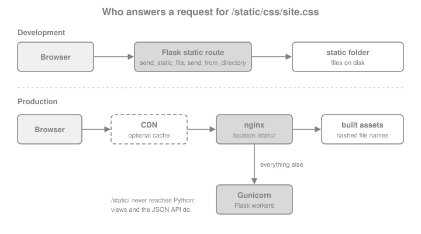

Static Files & Assets
|
This content was generated with the assistance of AI and should be verified against the official documentation before being relied on in production. |
This page is written against Flask 3.1.3 (released 2026-02-19), Werkzeug 3.1.9 and Python 3.13, checked on 2026-10-07;
every Python example was executed with those versions through Flask’s test client. Flask 3.2 is not released yet and
its changelog has no entry that changes static file handling. The page follows an asset from the disk to the browser:
the built-in static route and its options, how to build URLs and bust caches, how Flask decides on cache headers, how
to serve other files safely, the favicon, what changes in production (nginx, a CDN, X-Sendfile), a front-end build
with Vite, and finally the JavaScript, fetch and JSON pattern that connects a static script to the Bookshelf API.
How Flask Serves Static Files
A Flask application with a static folder next to its code serves that folder with no further work. When the
Flask object is created, and its static_folder is not None, the constructor registers one URL rule,
<static_url_path>/<path:filename>, with the endpoint static. The view behind it is
Flask.send_static_file(), which calls send_from_directory() on the static folder. Werkzeug does the file work
(werkzeug.utils.send_from_directory, safe_join and send_file: MIME type, ETag, Last-Modified, conditional
and range requests); Flask only decides the folder, the URL and the default cache lifetime.

Flask’s own static route is meant for development and small deployments. It is correct, but it occupies a worker for
every image, and a reverse proxy serves a file faster and with less memory (see production). Two things
follow from the design and are worth keeping in mind from the start. The static route is an ordinary Flask route, so
before_request functions, url_value_preprocessor functions and after_request functions run for it too, which is
why an authentication hook that rejects every request without a session also rejects the stylesheet of the login
page. And the route is only registered when the application is created, so static_folder must be given to the
constructor (or to the Blueprint), not changed later.
static_folder, static_url_path and static_host
The three constructor arguments are shared by Flask and Blueprint (the application-factory page lists them in
context; the blueprint rules are in Blueprints).
| Argument | Default | Meaning |
|---|---|---|
|
|
Folder served by the static route, relative to the application |
|
|
URL prefix of the route. The default is derived from the folder name, so |
|
|
Host used when the static rule is registered. It requires |
The properties app.static_folder (an absolute path), app.static_url_path and app.has_static_folder expose the
resolved values. The first example creates a throwaway folder tree for the Bookshelf and shows the defaults, a
renamed folder and a disabled route.
import pathlib
import tempfile
from flask import Flask, url_for
work = pathlib.Path(tempfile.mkdtemp(prefix="bookshelf-static-"))
def write(rel, text):
path = work / rel
path.parent.mkdir(parents=True, exist_ok=True)
path.write_text(text)
return path
write("static/css/site.css", "body { font-family: sans-serif; }\n")
write("static/js/books.js", "console.log('bookshelf');\n")
write("static/favicon.ico", "not-really-an-icon")
write("assets/logo.svg", "<svg xmlns='http://www.w3.org/2000/svg'/>")
write("secret.txt", "not for the web")
app = Flask("bookshelf", root_path=str(work))
assert app.static_folder == str(work / "static")
assert app.static_url_path == "/static"
assert app.has_static_folder
renamed = Flask("renamed", root_path=str(work), static_folder="assets")
assert renamed.static_url_path == "/assets"
custom = Flask("custom", root_path=str(work), static_folder="assets", static_url_path="/theme")
with custom.test_request_context():
assert url_for("static", filename="logo.svg") == "/theme/logo.svg"
nostatic = Flask("nostatic", root_path=str(work), static_folder=None)
assert not nostatic.has_static_folder
assert "static" not in {rule.endpoint for rule in nostatic.url_map.iter_rules()}
assert nostatic.test_client().get("/static/css/site.css").status_code == 404Source: Flask API: Flask
static_url_path may be "", which mounts the folder at the root of the site (/site.css). That is convenient for a
folder that only holds robots.txt and the like, but the static rule then competes with the application’s own
routes. Werkzeug sorts rules by specificity, so a fixed route such as /books still wins over <path:filename>; use
a distinct prefix unless there is a reason not to.
Building URLs with url_for("static", ...)
Never write /static/css/site.css in a template. url_for("static", filename="css/site.css") follows the
application’s static_url_path, the SCRIPT_NAME of a deployment under a sub-path (see
Routing & URL Building for url_for in general) and any prefix
added by a blueprint. The same function builds absolute URLs with _external=True.
from flask import render_template_string
app = Flask("bookshelf", root_path=str(work))
client = app.test_client()
@app.get("/")
def home():
return render_template_string(
'<link rel="stylesheet" href="{{ url_for(\'static\', filename=\'css/site.css\') }}">'
'<script src="{{ url_for(\'static\', filename=\'js/books.js\') }}" defer></script>'
)
with app.test_request_context():
assert url_for("static", filename="css/site.css") == "/static/css/site.css"
assert url_for("static", filename="css/site.css", _external=True) == "http://localhost/static/css/site.css"
html = client.get("/").get_data(as_text=True)
assert 'href="/static/css/site.css"' in html and 'src="/static/js/books.js"' in html
with client.get("/static/css/site.css") as response:
assert response.status_code == 200
assert response.mimetype == "text/css"
assert response.get_data(as_text=True).startswith("body")Source: Flask: Quickstart, Static Files
Extra keyword arguments to url_for that are not part of the rule become the query string, which is the hook for
cache busting in the next section. A call to url_for("static", ...) in an application whose static_folder is
None raises BuildError, and a call to app.send_static_file() raises RuntimeError ("'static_folder' must be
set to serve static_files").
Cache Busting
Browsers keep a stylesheet for as long as the response says they may. The static route can therefore leave users with
a stale site.css after a deployment, unless the URL changes whenever the content does. There are two designs.
A version in the query string keeps the file names and appends something that changes with the content. It needs no
build step, and Flask has a hook that lets every url_for("static", ...) call add it without touching the templates:
@app.url_defaults receives the endpoint and the values and may modify the values in place. The sketch below uses the
modification time of the file; a content hash is stronger (identical content gives the same URL after a redeploy) and
is cheap to compute once and remember.
import hashlib
import os
from functools import lru_cache
@lru_cache(maxsize=512)
def _digest(path: str, mtime_ns: int) -> str:
# The mtime is part of the cache key: a changed file is hashed again once.
with open(path, "rb") as handle:
return hashlib.sha256(handle.read()).hexdigest()[:10]
app = Flask("bookshelf", root_path=str(work))
@app.url_defaults
def add_static_version(endpoint, values):
if endpoint != "static" or "filename" not in values:
return
path = os.path.join(app.static_folder, values["filename"])
try:
values.setdefault("v", _digest(path, os.stat(path).st_mtime_ns))
except OSError:
pass # unknown file: leave the URL alone and let the route answer 404
with app.test_request_context():
versioned = url_for("static", filename="css/site.css")
assert versioned.startswith("/static/css/site.css?v=") and len(versioned.split("=")[1]) == 10
assert url_for("static", filename="missing.css") == "/static/missing.css"
before = versioned
write("static/css/site.css", "body { font-family: serif; }\n")
with app.test_request_context():
assert url_for("static", filename="css/site.css") != beforeSource: Flask API: Flask.url_defaults
The function only handles the application’s own static endpoint. A blueprint’s static endpoint is called
<blueprint>.static, so supporting it means looking up the blueprint’s static_folder. url_for also needs the
app global of the example, which is why a factory would write the hook inside create_app().
A hash in the file name (site.3f9a1c2b.css) is what bundlers produce. The URL is unique to the content, so the
file can be cached for a year and never revalidated; the application only has to know the mapping from the source name
to the built name, which is the topic of the Vite section. File-name hashing beats the query string in one
practical way: some CDNs and proxies ignore the query string when they compute the cache key, and then a ?v= change
does nothing.
Cache Headers: SEND_FILE_MAX_AGE_DEFAULT
The static view and send_file answer every request with a validator (ETag and Last-Modified) and handle
conditional requests, so a browser that already holds the file receives an empty 304 Not Modified. What Flask puts
in Cache-Control depends on max_age:
-
with no
max_ageandSEND_FILE_MAX_AGE_DEFAULT = None(the default), the response saysCache-Control: no-cache. That does not forbid storing the file; it makes the browser revalidate before reuse, which is cheap and always correct; -
with a number of seconds (or a
datetime.timedelta), the response getsCache-Control: public, max-age=Nand anExpiresheader, and the browser reuses the file without asking until it expires.
Since Flask 2.0 the default is None. Older code and the books that predate it describe a 12-hour default; if you
see a 12-hour max-age in an old deployment, someone set it. The method that turns the configuration into a number
is Flask.get_send_file_max_age(filename), and send_file and the static view both call it, so a subclass can
choose the lifetime per file. A long lifetime is only safe for URLs that change with the content, so the example
below makes versioned URLs immutable and keeps everything else on revalidation.
from datetime import timedelta
from flask import request
class BookshelfApp(Flask):
def get_send_file_max_age(self, filename):
# The ?v= query comes from add_static_version above: such URLs change with the content.
if request and "v" in request.args:
return int(timedelta(days=365).total_seconds())
return super().get_send_file_max_age(filename)
app = BookshelfApp("bookshelf", root_path=str(work))
app.url_defaults(add_static_version)
client = app.test_client()
with client.get("/static/css/site.css") as plain:
assert plain.headers["Cache-Control"] == "no-cache"
etag = plain.headers["ETag"]
assert "Last-Modified" in plain.headers
with client.get("/static/css/site.css", headers={"If-None-Match": etag}) as conditional:
assert conditional.status_code == 304
with client.get("/static/css/site.css?v=abc") as versioned_response:
assert versioned_response.cache_control.max_age == 31536000
assert versioned_response.cache_control.public
# The configuration key is the blunt alternative: one lifetime for every static file.
fixed = Flask("fixed", root_path=str(work))
fixed.config["SEND_FILE_MAX_AGE_DEFAULT"] = timedelta(hours=1)
with fixed.test_client().get("/static/css/site.css") as hourly:
assert hourly.cache_control.max_age == 3600The immutable cache directive (RFC 8246) tells a browser not to revalidate on a reload either. Werkzeug’s response
cache_control object has an immutable property, so an after_request function can add it to versioned static
responses. Browsers also revalidate on a hard reload regardless of max-age, and none of this applies to the HTML
pages, which should keep revalidating so that they can name the new asset URLs.
Other Files: send_from_directory and Path Safety
The static folder is for files that belong to the application. Files the application stores, such as the book covers
in the File Uploads page, belong in a folder that is not under static/, and are served by a view that calls
send_from_directory(directory, path). The function joins the client’s path to the trusted directory with
werkzeug.security.safe_join, answers 404 when the result escapes the directory or is not a regular file, and
otherwise calls send_file, with the same validators and max_age handling as above. The directory must never come
from the client.
from flask import send_from_directory
from werkzeug.exceptions import NotFound
from werkzeug.security import safe_join
write("media/covers/dune.txt", "cover bytes")
MEDIA = work / "media"
app = Flask("bookshelf", root_path=str(work))
client = app.test_client()
@app.get("/covers/<path:name>")
def cover(name):
return send_from_directory(MEDIA / "covers", name, max_age=3600)
assert client.get("/covers/dune.txt").status_code == 200
assert client.get("/covers/missing.txt").status_code == 404
assert client.get("/covers/../../secret.txt").status_code == 404
assert client.get("/covers/..%2f..%2fsecret.txt").status_code == 404
assert client.get("/static/..%2fsecret.txt").status_code == 404
# the rule behind the 404 ...
assert safe_join(str(MEDIA), "covers/dune.txt") == str(MEDIA / "covers" / "dune.txt")
assert safe_join(str(MEDIA), "../secret.txt") is None
# ... and the exception the view helper raises
with app.test_request_context():
try:
send_from_directory(MEDIA, "../secret.txt")
except NotFound:
pass
else:
raise AssertionError("path traversal was not rejected")Use send_file only with paths that the application built itself: its documentation says never to pass a path from the
user. The renamed arguments of send_file (download_name, max_age, etag) and the path argument of
send_from_directory are described on Responses & JSON; the receiving
side of uploads, with secure_filename and size limits, is in the page about file uploads of this section.
Note that safe_join does not look at symlinks. A symlink inside the folder that points outside it is followed, so do
not put such links in a served folder. Since Werkzeug 3.1.9 safe_join also rejects special Windows device names
such as CON and NUL that would otherwise hang the read.
The Favicon
Browsers request /favicon.ico on their own unless the page names an icon. The cleanest answer is a <link> in the
base template, which can point into the static folder and use any format and size:
<link rel="icon" href="{{ url_for('static', filename='favicon.ico') }}" sizes="any">Source: Flask: Adding a favicon
For clients that ignore the link (feed readers, link previewers, some tools), answer the well-known path as well.
Either redirect it to the static file with the redirect_to option that add_url_rule passes on to Werkzeug’s rule,
or serve the bytes directly:
app = Flask("bookshelf", root_path=str(work))
app.add_url_rule("/favicon.ico", endpoint="favicon", redirect_to="/static/favicon.ico")
@app.get("/apple-touch-icon.png")
def touch_icon():
return send_from_directory(app.static_folder, "favicon.ico", mimetype="image/png", max_age=86400)
response = app.test_client().get("/favicon.ico")
assert response.status_code in (301, 302, 307, 308)
assert response.headers["Location"].endswith("/static/favicon.ico")
with app.test_client().get("/apple-touch-icon.png") as icon:
assert icon.mimetype == "image/png" and icon.cache_control.max_age == 86400Source: Flask: Adding a favicon
A missing favicon is a common source of noise: every page view then produces a 404 for /favicon.ico in the log. Tests
that assert "no 404 in the logs" are better off adding the file than filtering the line.
Static Files in Production
In production the static route should not be the one answering. A reverse proxy such as nginx reads the files with
the operating system’s file cache and sendfile, supports compression and long lifetimes with one line each, and
leaves the Gunicorn workers free for the dynamic requests (the topology is on the figure at the top). Deployment
itself, with the WSGI server, ProxyFix and HTTPS, is the subject of the page about deployment of this section; the
static part is a location block.
server {
listen 443 ssl;
server_name bookshelf.example.org;
# Files built by Vite: the names contain a content hash, so they never change.
location /static/dist/ {
alias /srv/bookshelf/static/dist/;
expires 1y;
add_header Cache-Control "public, immutable";
access_log off;
}
# Other static files: revalidate.
location /static/ {
alias /srv/bookshelf/static/;
add_header Cache-Control "no-cache";
}
location / {
proxy_pass http://127.0.0.1:8000;
proxy_set_header Host $host;
proxy_set_header X-Forwarded-For $proxy_add_x_forwarded_for;
proxy_set_header X-Forwarded-Proto $scheme;
}
}The URL prefix in the location must equal the application’s static_url_path and the alias must point at the
static folder of the deployed code, with a trailing slash on both (otherwise the path is concatenated wrongly). The
add_header directives are not inherited into a block that defines its own, so repeat the security headers there.
Three variations deserve a mention:
-
X-SendfileandX-Accel-Redirect. For files that need an authorisation check in Python but should be sent by the proxy, Flask can answer with an empty body and a header that tells the front end which file to send. SetUSE_X_SENDFILE = Truewhen the server understandsX-Sendfile(Apache withmod_xsendfile, lighttpd). With nginx the equivalent header isX-Accel-Redirect, which is not set byUSE_X_SENDFILE: the view sets it itself, and the nginx location is markedinternal. Both are covered further in Responses & JSON. -
A CDN in front. The cache lifetime and the file-name hashing above are all a CDN needs. If the CDN also serves the assets from its own host name, the application must produce absolute URLs. The
static_hostargument is forhost_matchingapplications; for a plain CDN a small template helper that prefixes the URL is simpler (example below). The CDN origin is nginx, not Flask. -
Compression. Compress text assets in the proxy (
gzip, or pre-compressed.gzand.brfiles with the respective nginx modules), or at build time. Flask’s static route does not compress.
def init_assets(app):
"""Register asset_url() so templates can write {{ asset_url('css/site.css') }}."""
app.config.setdefault("ASSET_BASE_URL", "")
@app.context_processor
def assets():
def asset_url(filename):
url = url_for("static", filename=filename)
base = app.config["ASSET_BASE_URL"].rstrip("/")
return f"{base}{url}" if base else url
return {"asset_url": asset_url}
app = Flask("bookshelf", root_path=str(work))
init_assets(app)
@app.get("/")
def home():
return render_template_string("<link rel='stylesheet' href='{{ asset_url(\"css/site.css\") }}'>")
assert "href='/static/css/site.css'" in app.test_client().get("/").get_data(as_text=True)
app.config["ASSET_BASE_URL"] = "https://cdn.example.org/bookshelf/"
assert "https://cdn.example.org/bookshelf/static/css/site.css" in app.test_client().get("/").get_data(as_text=True)The base URL comes from configuration (an environment variable in the application factory), so the same code runs against the local static route in development and the CDN in production.
Front-End Tooling: Vite Builds and a Manifest
A Flask application that needs more than a few hand-written files (TypeScript, a component framework, CSS preprocessing, minification, hashed file names) adds a bundler. The maintained choice today is Vite; Create React App, which the book Full-Stack Flask and React uses for its React project, was deprecated in February 2025 and is not a starting point for new work. The React side of such a project is covered by the React pages of this site (React); here the interest is the contract between the build and Flask.
Vite’s backend-integration guide describes it: set build.manifest so that the build writes .vite/manifest.json
into the output folder, name the entry file as the Rollup input, and have the backend read the manifest to build the
<script> and <link> tags. In development the backend instead emits two script tags that point at the Vite dev
server: @vite/client and the entry file.
// vite.config.js (in the repository root, next to package.json)
import { defineConfig } from "vite";
export default defineConfig({
build: {
manifest: true,
outDir: "src/bookshelf/static/dist",
emptyOutDir: true,
rollupOptions: { input: "frontend/main.js" },
},
server: { origin: "http://localhost:5173" },
});Source: Vite: Backend Integration
Each manifest entry is keyed by the source file and has a file field with the hashed output name, an optional css
list and an optional imports list of shared chunks. A template global that reads the manifest once and renders the
tags is about twenty lines (the test below writes a manifest by hand, so it does not need Node.js):
import json
from markupsafe import Markup, escape
write("static/dist/.vite/manifest.json", json.dumps({
"frontend/main.js": {
"file": "assets/main-3f9a1c2b.js",
"src": "frontend/main.js",
"isEntry": True,
"css": ["assets/main-9b8e7d6c.css"],
}
}))
write("static/dist/assets/main-3f9a1c2b.js", "console.log('built');")
write("static/dist/assets/main-9b8e7d6c.css", "body { margin: 0 }")
def init_vite(app, dist="dist", dev_origin=None):
manifest_path = os.path.join(app.static_folder, dist, ".vite", "manifest.json")
@lru_cache(maxsize=1)
def manifest():
with open(manifest_path) as handle:
return json.load(handle)
@app.template_global()
def vite_tags(entry):
if dev_origin: # development: the Vite dev server serves and reloads modules
return Markup(
'<script type="module" src="{o}/@vite/client"></script>'
'<script type="module" src="{o}/{e}"></script>'
).format(o=dev_origin, e=entry)
item = manifest()[entry]
parts = [
Markup('<link rel="stylesheet" href="{}">').format(url_for("static", filename=f"{dist}/{css}"))
for css in item.get("css", [])
]
parts.append(
Markup('<script type="module" src="{}"></script>').format(
url_for("static", filename=f"{dist}/{item['file']}")
)
)
return Markup("").join(parts)
app = Flask("bookshelf", root_path=str(work))
init_vite(app)
@app.get("/")
def home():
return render_template_string("<head>{{ vite_tags('frontend/main.js') }}</head>")
page = app.test_client().get("/").get_data(as_text=True)
assert '<link rel="stylesheet" href="/static/dist/assets/main-9b8e7d6c.css">' in page
assert '<script type="module" src="/static/dist/assets/main-3f9a1c2b.js"></script>' in page
dev = Flask("bookshelf-dev", root_path=str(work))
init_vite(dev, dev_origin="http://localhost:5173")
dev.add_url_rule("/", "home", lambda: render_template_string("{{ vite_tags('frontend/main.js') }}"))
assert "http://localhost:5173/@vite/client" in dev.test_client().get("/").get_data(as_text=True)Source: Vite: Backend Integration
Two details of the helper matter. The values are inserted with Markup.format, which escapes its arguments, and the
manifest is data from the build, so a poisoned manifest cannot inject markup. And the production branch should fail
loudly (a KeyError at the first request) when the entry is missing, rather than render a page without its script.
In a project the build output belongs to .gitignore and is produced in CI, before the wheel or the Docker image is
built; the layout page shows static/ inside the package so that the built files travel with it.
The Vite dev server is a separate process, so in development either the page loads modules from http://localhost:5173
(CORS must allow the Flask origin: server.cors.origin in Vite) or Vite proxies the Flask API through its
server.proxy option. The single-page-application page of this section covers the second layout, where Flask serves
only the JSON API and the built index.html.
JavaScript, fetch and JSON
A static script talks to the application through fetch and JSON. The official pattern has a few rules that the
code below follows:
-
the template, not the script, knows the URLs. Render them with
url_forandtojsonand hand them to the script, because JavaScript runs in the browser and cannot callurl_for. The same filter turns server data into a valid JavaScript value and escapes the characters that would break out of a<script>block; -
if the value goes into a
data-attribute, the attribute must be enclosed in single quotes, because the filter produces double-quoted JSON; -
a request with a JSON body must carry
Content-Type: application/json, otherwiserequest.jsonraises415 Unsupported Media Type; a body that is not valid JSON gives400; -
a view that returns a dict or list answers JSON, and file data belongs in a separate request: put the URL of the cover in the JSON, not its bytes.
from flask import jsonify
write("static/js/books.js", """\
const list = document.querySelector("#books");
const csrf = document.querySelector("meta[name=csrf-token]");
async function loadBooks() {
const response = await fetch(list.dataset.url);
if (!response.ok) { throw new Error(`HTTP ${response.status}`); }
for (const book of await response.json()) {
const item = document.createElement("li");
item.textContent = `${book.title} (${book.year})`; // textContent, never innerHTML
list.append(item);
}
}
async function addBook(book) {
const headers = { "Content-Type": "application/json" };
if (csrf) { headers["X-CSRFToken"] = csrf.content; }
const response = await fetch(list.dataset.url, { method: "POST", headers, body: JSON.stringify(book) });
return response.json();
}
loadBooks();
""")
BOOKS = [{"id": 1, "title": "Dune", "year": 1965}]
app = Flask("bookshelf", root_path=str(work))
@app.get("/books")
def books_page():
return render_template_string(
"<ul id='books' data-url='{{ url_for(\"api_books\")|tojson }}'></ul>"
"<script src='{{ url_for(\"static\", filename=\"js/books.js\") }}' defer></script>"
)
@app.get("/api/books")
def api_books():
return jsonify(BOOKS)
@app.post("/api/books")
def api_add_book():
data = request.json # 415 without the JSON content type, 400 for invalid JSON
book = {"id": len(BOOKS) + 1, "title": data["title"], "year": data["year"]}
BOOKS.append(book)
return book, 201
client = app.test_client()
page = client.get("/books").get_data(as_text=True)
assert "data-url='\"/api/books\"'" in page # tojson output, inside single quotes
assert "/static/js/books.js" in page
assert client.get("/api/books").get_json() == [{"id": 1, "title": "Dune", "year": 1965}]
assert client.post("/api/books", data='{"title": "Emma", "year": 1815}').status_code == 415
assert client.post("/api/books", data="{", content_type="application/json").status_code == 400
created = client.post("/api/books", json={"title": "Emma", "year": 1815})
assert created.status_code == 201 and created.get_json()["id"] == 2
with client.get("/static/js/books.js") as script:
assert script.mimetype in ("text/javascript", "application/javascript")The script reads the URL as list.dataset.url; because the attribute holds JSON, the value "/api/books" arrives with
its quotes and a real project would call JSON.parse(list.dataset.url) once. Writing it with {{ url_for(...) }}
without tojson and a plain double-quoted attribute works for simple strings but loses the escaping guarantees, which
matters as soon as the value is data and not a URL.
A page that uses cookie-based authentication must send a CSRF token with every state-changing fetch. Flask-WTF reads
it from the X-CSRFToken header; the script above reads the token from a meta tag when one is present. The token and
the extension are explained in the Flask-WTF page of this section. Cross-origin calls from a separately served
front end are the subject of the page about single-page applications and CORS.
Pitfalls and Security
| Pitfall | What to do |
|---|---|
The application root served as the static folder |
|
User uploads under |
Everything in the folder is public and uses the extension for its MIME type. Store uploads elsewhere and serve them through a view with |
HTML or SVG from users served inline |
The browser executes the scripts in it in the site’s origin. The official security notes say never to send HTML from uploaded files and to use |
MIME sniffing |
Send |
|
A strict policy such as |
Authentication hooks on the static route |
|
Symlinks inside served folders |
|
A moved |
The route is registered by the constructor. Pass the final value to |
Long |
Users keep an old stylesheet for a year. Combine long lifetimes only with hashed names or a version query. |
The development server in production |
|
Source: Flask: Security Considerations
Recent Changes and Where the Books Are Outdated
| Version | Change | Consequence |
|---|---|---|
Flask 2.0 |
|
Static files are revalidated by default. Old advice to lower a 12-hour cache to see changes during development no longer applies. |
Flask 2.0 and 2.2 |
|
Code from the books that passes the old names fails with |
Flask 2.2 and 2.3 |
|
Development behaviour is switched with |
Flask 3.0 |
|
Import |
Werkzeug 3.1.9 |
|
Applies to Windows hosts that serve user-chosen paths. |
Flask 3.2 (unreleased) |
No change to static files in the changelog. |
Nothing to do. |
The configuration chapter of the Flask Framework Cookbook shows static_folder and static_url_path as arguments
of Flask(...), which is still correct, but its examples install the application with setup.py; the current layout is
a pyproject.toml project run with the flask --app command. For the front end, Full-Stack Flask and React builds the React part with Create React App,
which was deprecated in February 2025: use Vite as shown above. Where the books serve their built assets from Flask’s
static route in production, use a proxy as described in the production section.